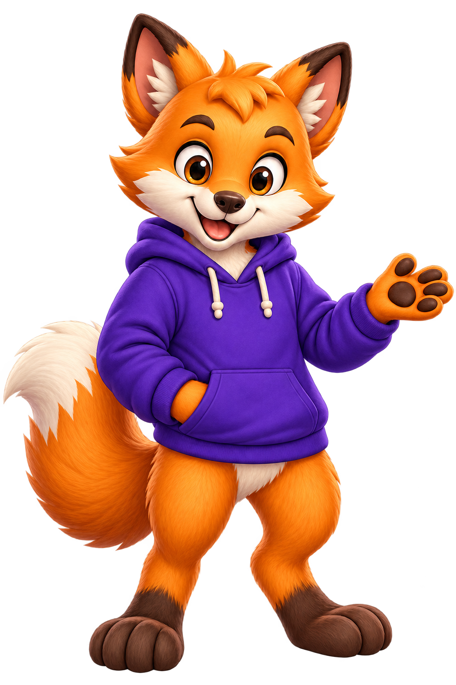
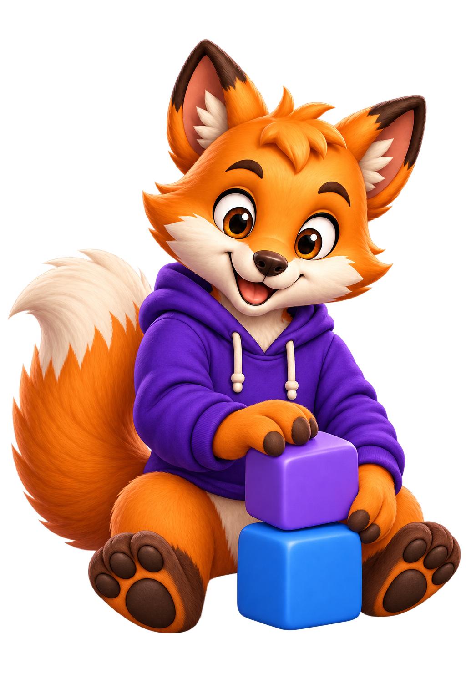
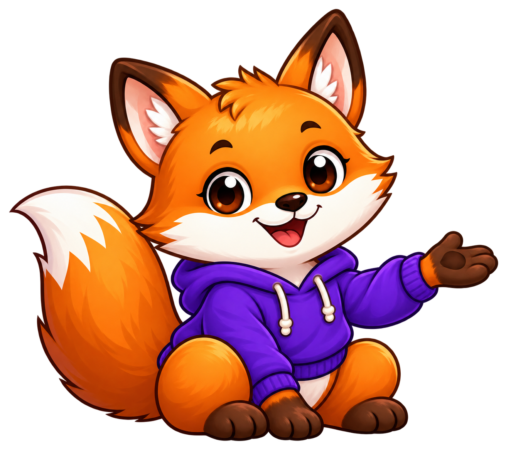
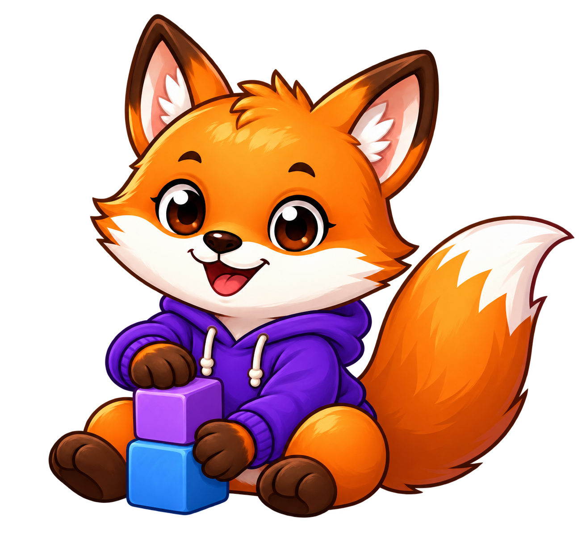
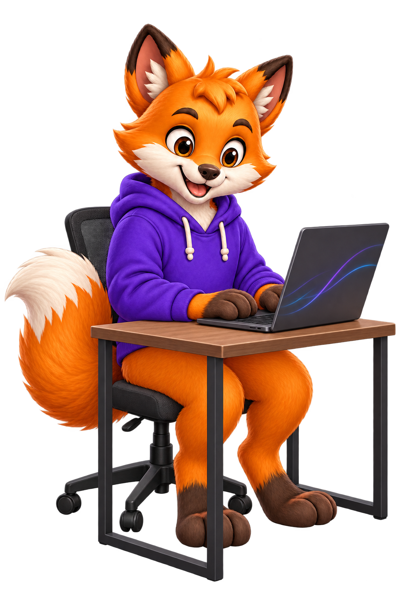
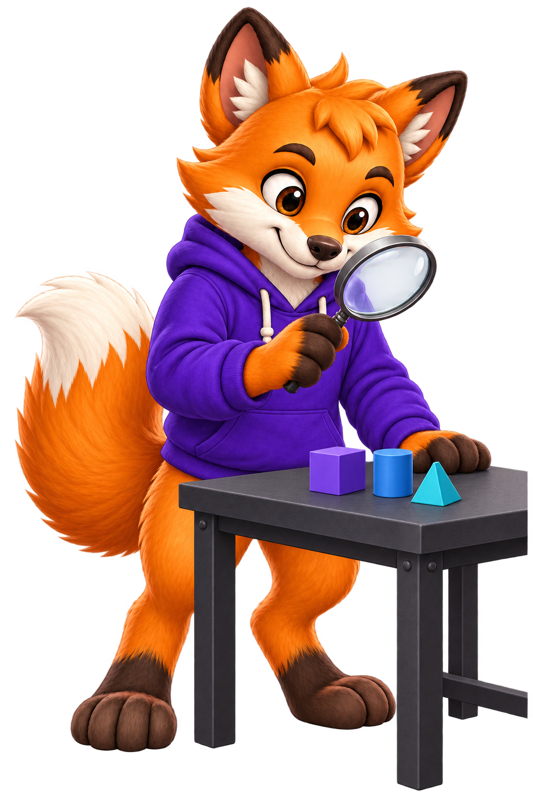
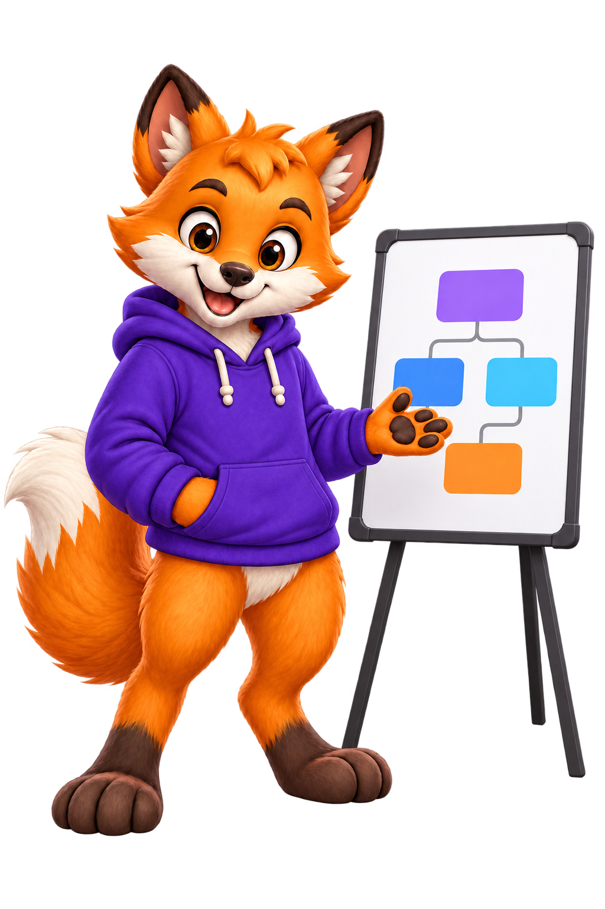
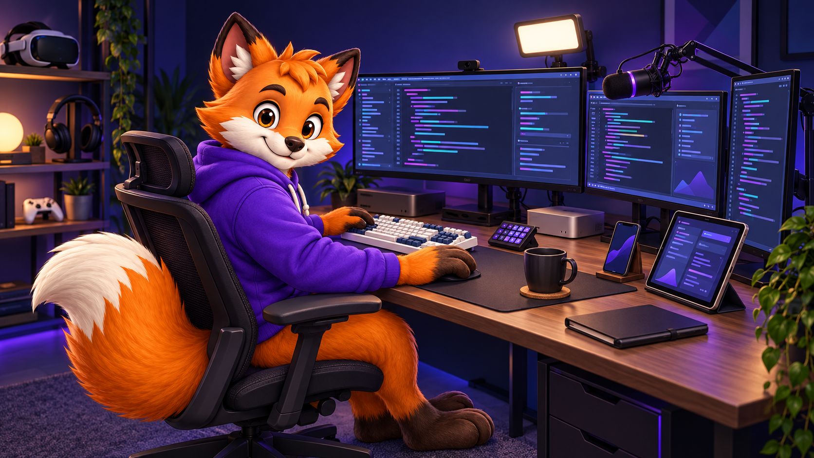
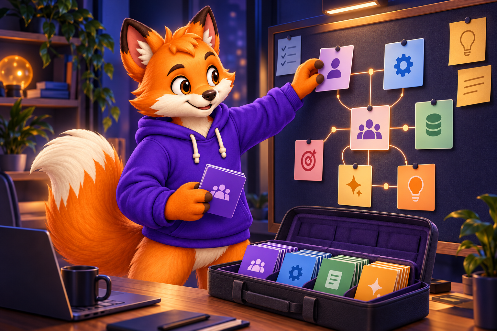
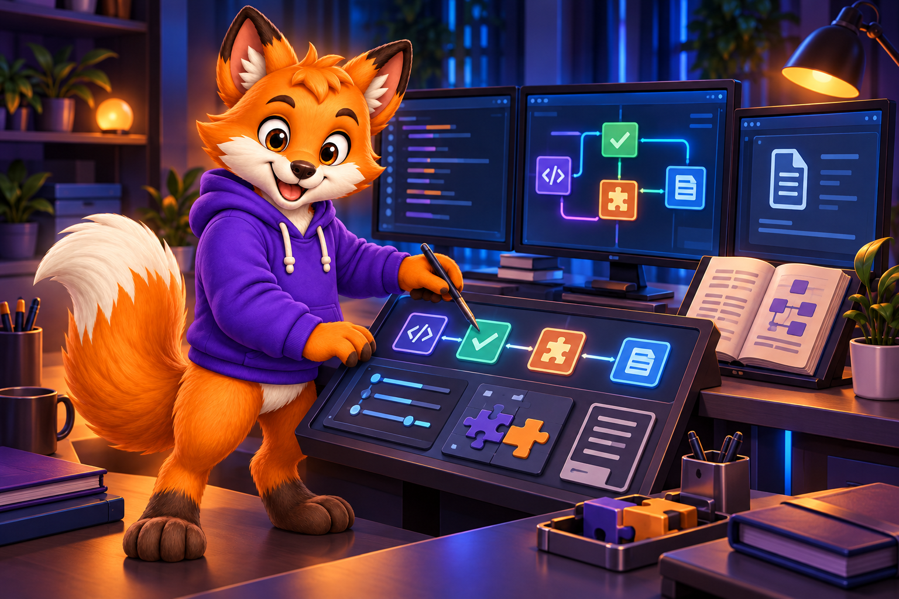

01
Warm, curious faceAmber/brown eyes, a small dark nose, rounded cream cheeks, and a friendly expression.
Identity reference · 2026.10
One curious orange fox. A framework built around composition. A visual language that helps people find their next useful step.

01 / Character anchors
Dash developer is the primary reference. The new editorial collection is an intentional softer alternative. Each master keeps its own face, proportions, and finish across poses.
Amber/brown eyes, a small dark nose, rounded cream cheeks, and a friendly expression.
Orange fur and forehead tuft. Cream muzzle, chest, inner ears, and tail tip.
Large triangular ears, dark paws, a full sweeping tail, and warm brown contours.
Books explain learning. A wave welcomes. The purple hoodie connects Dash to the developer ecosystem.
02 / Dash pose matrix
Developer is the main identity. Editorial is the secondary collection for welcoming, community, and softer institutional moments. Choose a collection, then a pose; keep its face and finish together.
4 references shown
A calm greeting for onboarding, contribution, and framework introductions.
dash-developer-welcome.pngA plain book supports guides and concepts; the actual explanation remains readable text.
dash-developer-reading.png
An open-paw gesture directs attention without becoming a required interface instruction.
dash-developer-guide.png
Two simple blocks express connected components without inventing a software API.
dash-developer-build.png
A calm greeting for onboarding, contribution, and framework introductions.
dash-editorial-hoodie.pngA plain book supports guides and concepts; the actual explanation remains readable text.
dash-editorial-reading.png
An open-paw gesture directs attention without becoming a required interface instruction.
dash-editorial-guide.png
Two simple blocks express connected components without inventing a software API.
dash-editorial-build.pngReview the new developer scene proposals alongside the selected references.
Scene proposals / New developer scenes
Four new developer scenes await review; the selected eight-pose matrix remains the identity reference.

A programming scene for tutorials, repository introductions, and practical examples.
View the coding proposal
A focused troubleshooting scene for explanations, diagnosis, and useful next steps.
View the debugging proposal
A teaching scene for showing how components work together and guiding a reader through a concept.
View the explaining proposal
A robust developer studio inspired by the equipment in the maintainer's desk reference. This scene has an intentional opaque navy background; the personal source photo stays outside the repository.
View the workstation proposalReview the face, one-tail anatomy, complete silhouette, props, and light/navy rendering before selecting a cutout. The workstation uses its own opaque studio background. Compose exact code, titles, and reviewed logos separately. The portrait study is an additional proposal for logo applications; it does not join this pose matrix.
03 / Visual system
Violet, blue, and cyan carry the institutional direction. Warm fox colors bring approachability. Exact UI values live in DESIGN.md.
#6D28D9#2563EB#22D3EE#050B20#F28D1A#FFF3DF#592D19#F6F8FFA solid-color signature with native fox geometry and Exo 2 Italic lettering outlined into paths.
Color, ink and white exports share geometry and spacing. See the logo masters and applications.
#FF641B; illustration fur keeps its own warm orange reference. The logo is a native vector asset. Dash illustrations remain raster artwork, with explicit provenance and rights records.04 / Shared surfaces
A shared signature, a quiet documentation surface, and useful character moments. The production examples use the current logo and selected Dash master.
English is the default, with Portuguese and Spanish versions linked from every profile.
View the current cover compositionReadable navigation, accessible code panels, and Dash beside learning moments.
Open the implemented documentation pattern05 / Ecosystem applications
Nineteen reviewed scenes show the developer collection organizing resources, connecting services and shaping useful tools.

Curated roles and skill resources become a clear team map.

Tests, style, refactoring and documentation share one purposeful workspace.